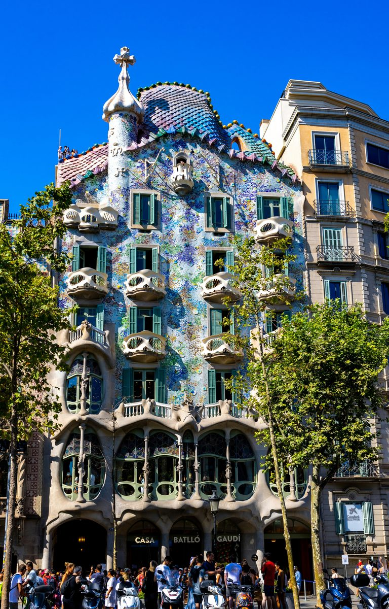

Three architects. One city block. A movement that changed what buildings could look like. Barcelona's Modernisme from its first building to its last.
From the Block of Discord to the last building Domenech i Montaner ever completed. Three architects, forty years, one extraordinary argument about what a city should look like.
Enjoyed this tour?
Try Old Barcelona
The Gothic Quarter, the Cathedral, the Born and the Picasso Museum. Eight stops through the oldest streets in the city, from Roman walls to medieval palaces.
Start Old Barcelona TourLeave a quick review. It helps other travellers find us and means a lot.
♥ Thank you so much. We'll read it and add it to the site shortly.
You've seen what this tour is like. The next 6 stops go further. €4.99, yours to keep forever.
Unlock Full Tour - €4.99Payments powered by Lemon Squeezy & Stripe